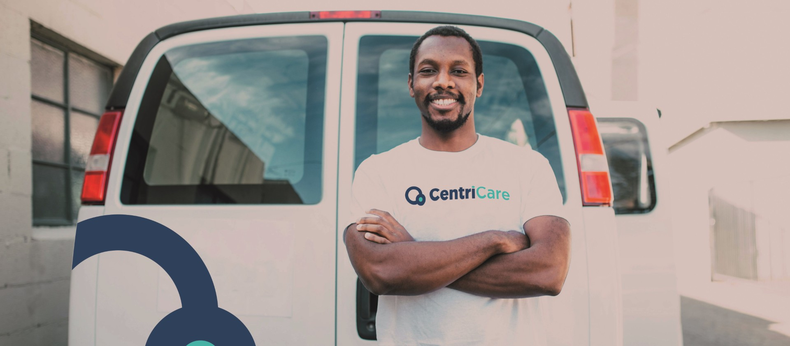

Ensuring clean, safe and well-maintained environments
At CentriCare PTY Ltd, we are dedicated to delivering excellence in every aspect of hygiene, cleaning, and facility care. Our comprehensive range of services is tailored to meet the diverse needs of our clients, ensuring clean, safe, and well-maintained environments across various sectors. Whether it's commercial spaces, residential properties, or specialized facilities, our expertise, innovative solutions, and eco-friendly practices guarantee exceptional results.

Delivering excellence through innovation, collaboration, and attention to detail
At CentriCare PTY Ltd, our approach is built on delivering excellence through innovation, collaboration, and attention to detail. We implement internationally recognized quality management systems, including ISO 9001:2015, to ensure consistent and reliable service delivery across all sectors.
- Customized Solutions:
- Highly Trained Professionals:
- Technology-Driven Processes:
- Commitment to Excellence:
We understand that every client is unique, and so are their needs. Our team works closely with clients to design tailored service plans that align with their operational goals and expectations.
Our workforce is composed of skilled and experienced professionals who are equipped with modern tools and cutting-edge techniques to deliver outstanding results.
We leverage the latest technology and data-driven systems to enhance efficiency, monitor performance, and ensure the highest standards in all our services.
Whether it's cleaning, hygiene services, pest control, or waste management, we are dedicated to going above and beyond to meet and exceed our clients' expectations.